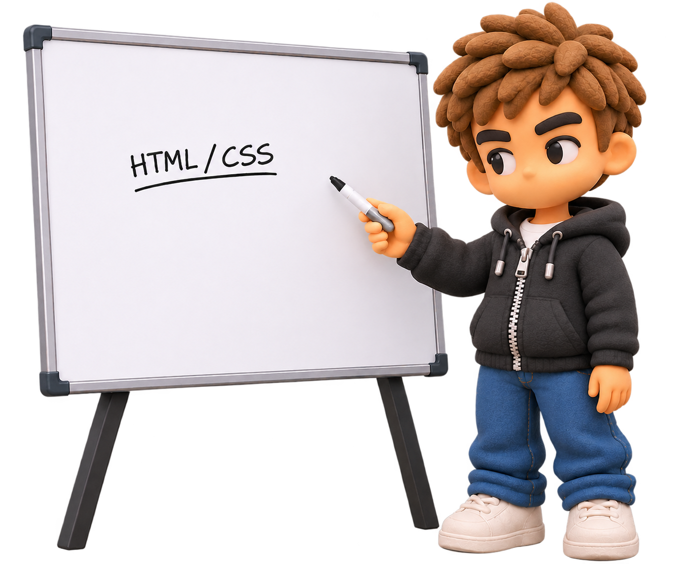
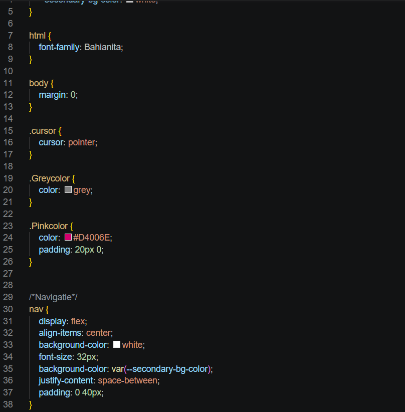
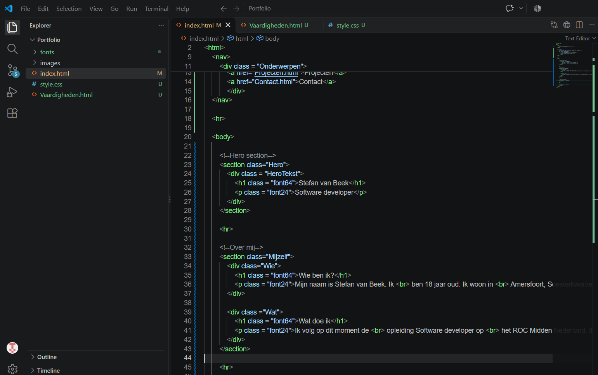
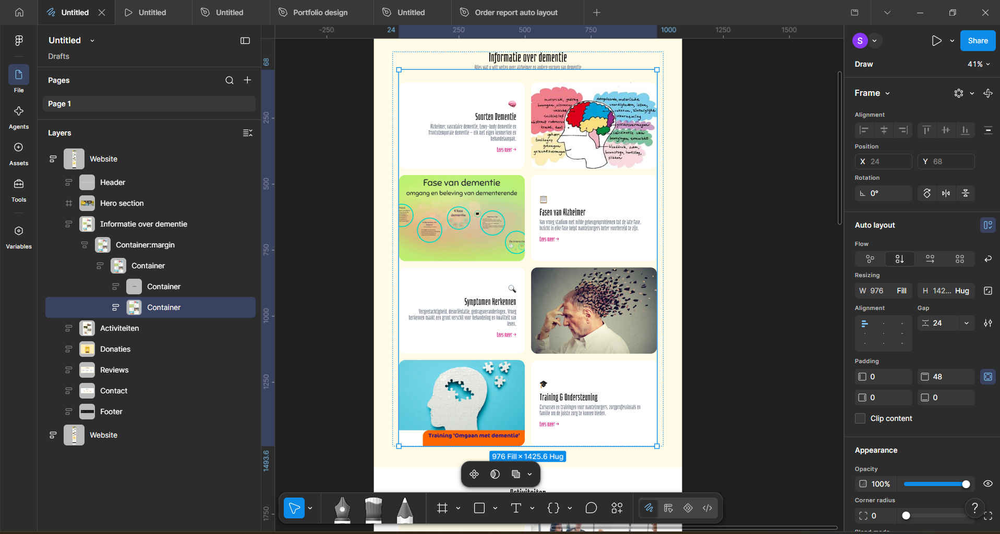
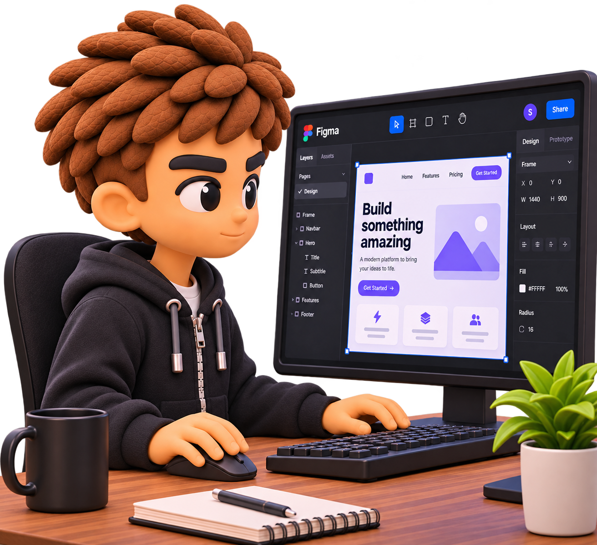
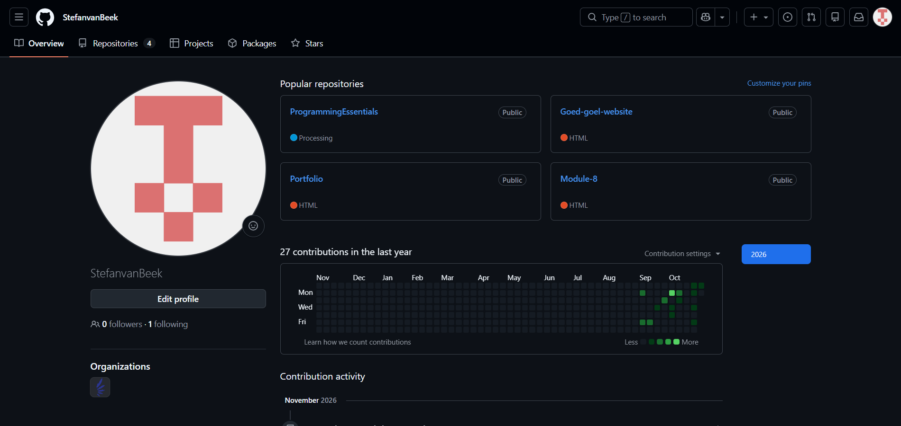
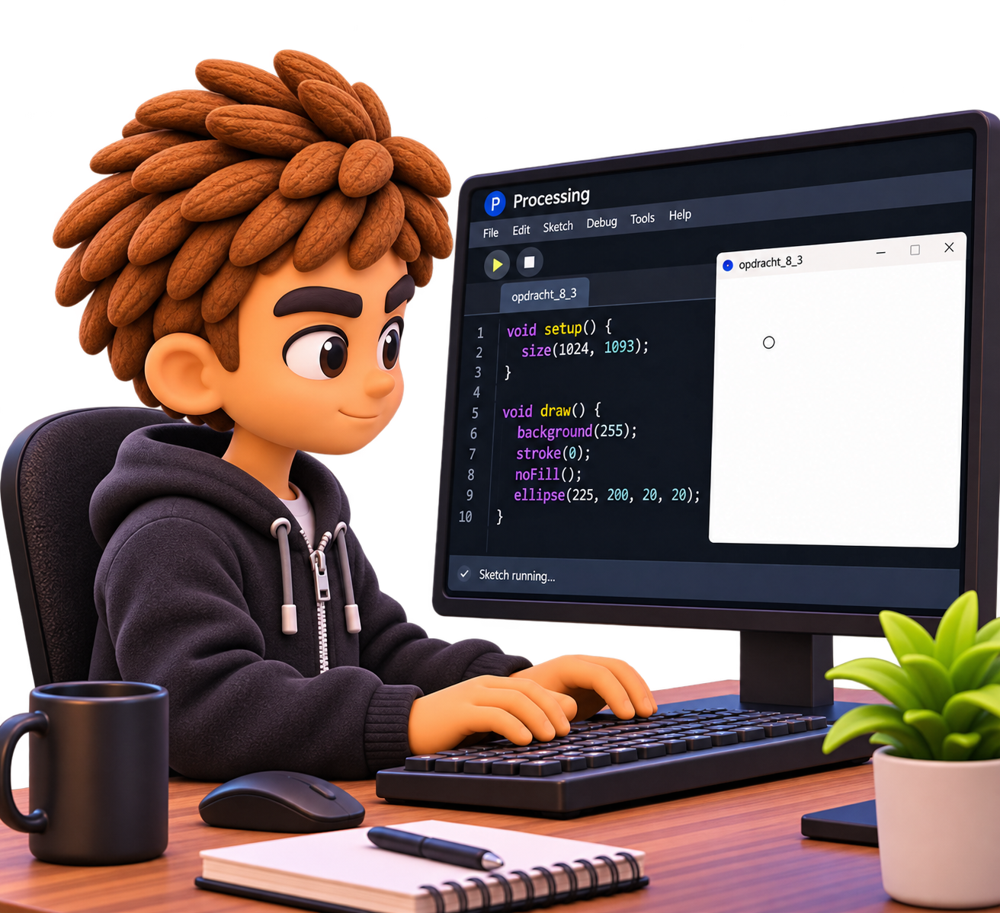
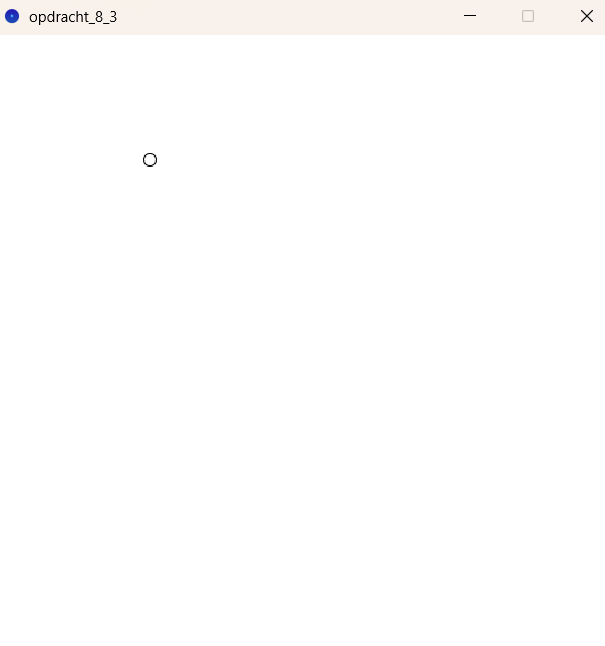

Op deze pagina heb ik mijn
vaardigheden staan en mijn ervaringen met Software.

Ik heb in periode 1 van het eerste jaar veel geleerd over het gebruik
van html en css. Ik weet hoe ik ze
aan elkaar kan koppelen, zodat de
css de html kan stylizen. Verder
ken ik de basisstructuur van html
wel en kan ik zonder moeite een
website maken




Tijdens de duur van de eerste periode van het eerste jaar heb ik geleerd over hoe ik het programma
Figma kan gebruiken. Met dit programma
kan ik designs maken voor mijn website,
waardoor het makkelijker wordt om te coderen.
Met Figma heb ik voornamelijk geleerd hoe
je auto layout gebruikt. Dit zorgt ervoor dat
de layout automatisch alles aanpast.
Stel ik verplaats 1 stukje in de navigatie balk,
dan beweegt de rest mee zodat het netjes blijft.
In periode 1 van jaar 1 heb ik vooral geleerd
om met git om te gaan.
Voornamelijk gebruik ik github.
Hier kan ik mijn projecten opslaan zodat
als ik ze op een manier kwijtraak dat ik ze
net zo makkelijk terug kan krijgen.
Dit doe ik door middel van mijn projecten
te committen, en dan ze te pushen naar github.



Als laatste onderwerp wat ik de
eerste periode van het eerste jaar
heb geleerd is Javascript.
Met Javascript leer ik dingen zoals
vormen tekenen, animaties en kleine
programma's maken zoals klokjes of
rekenmachines. Ik heb dit vooral met
processing gedaan. Ik heb meerdere
animaties gemaakt, bijvoorbeeld een
balletje die beweegt, en als die het einde
van het scherm bereikt dat hij terug teleporteerd.